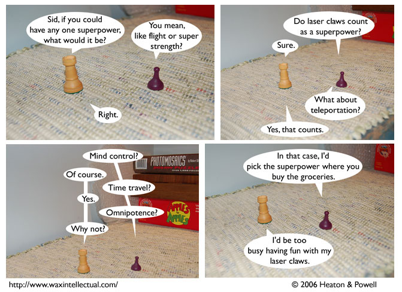

Strip #5
— Friday, June 23, 2006
Sid rules at Apples to Apples, Stephen is more of a Sudoku guy
Notes, Thoughts, &c.
Ben’s Notes
In the background of panel 3, you can see Apples to Apples, a chessboard, and a photomosaic puzzle. Those are items I happened to have around the house, and that happened to be on the bench that I wanted to use for these pictures.
Lewis’s Notes
I’d like to make it clear that one could not choose either of the following: (1) Captain America’s shield or (2) a protein allergy. The former is a possession, not a power, and the latter is a weakness, not a power.
One could however, choose either of the following: (a) the ability to summon Captain America’s shield instantaneously, whenever desired, or (b) the ability to acquire and lose allergies at will.